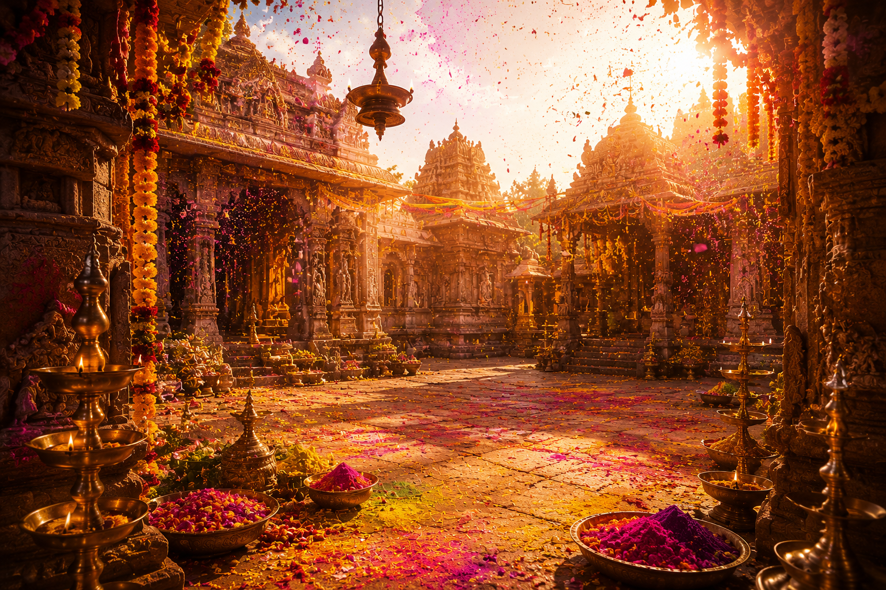

హోళీ
భారతీయ మరియు తెలుగు సంప్రదాయ పర్వదినం

౧. పరిచయం
హోళీ భారతదేశంలోని అత్యంత ఆనందోత్సాహాలతో జరుపుకునే పర్వదినాలలో ఒకటి. దీనిని రంగుల పండుగ అని కూడా పిలుస్తారు. ఫాల్గుణ పౌర్ణమి రోజున జరుపుకునే ఈ పండుగ వసంత ఋతువు ఆగమనాన్ని, చెడుపై మంచి సాధించిన విజయాన్ని మరియు ప్రేమ, స్నేహం, సోదరభావాన్ని ప్రతిబింబిస్తుంది. భారతదేశమంతటా వివిధ ప్రాంతాలలో విభిన్న సంప్రదాయాలతో ఈ పండుగను వైభవంగా నిర్వహిస్తారు.
౨. పండుగ ప్రాముఖ్యత
హోళీ ఆనందానికి, ఐక్యతకు, క్షమాగుణానికి మరియు కొత్త ఆరంభానికి ప్రతీక. ఈ రోజున పాత విభేదాలను మరచి కుటుంబ సభ్యులు, బంధువులు, స్నేహితులు పరస్పరం రంగులు చల్లుకొని శుభాకాంక్షలు తెలియజేసుకుంటారు.
ప్రకృతిలో కొత్త చిగుర్లు తొడిగే వసంత ఋతువును ఆహ్వానిస్తూ ఈ పండుగను జరుపుకోవడం భారతీయ సంస్కృతిలో ప్రత్యేకమైన సంప్రదాయం.
ప్రకృతిలో కొత్త చిగుర్లు తొడిగే వసంత ఋతువును ఆహ్వానిస్తూ ఈ పండుగను జరుపుకోవడం భారతీయ సంస్కృతిలో ప్రత్యేకమైన సంప్రదాయం.
౩. హోళీ ఆవిర్భావం – పురాణ నేపథ్యం
హోళీ పండుగకు సంబంధించిన ప్రధాన కథ ప్రహ్లాదుడు మరియు హోలికకు సంబంధించినది.
హిరణ్యకశిపుడు తన కుమారుడైన ప్రహ్లాదుడు శ్రీమహావిష్ణువును ఆరాధించడం ఇష్టపడలేదు. అనేకసార్లు అతనిని చంపేందుకు ప్రయత్నించినప్పటికీ ప్రహ్లాదుడిని శ్రీహరి రక్షించాడు.
చివరికి హిరణ్యకశిపుని సోదరి హోలికకు అగ్నిలో కాలిపోని వరం ఉండేది. ఆమె ప్రహ్లాదుడిని ఒడిలో కూర్చోబెట్టి అగ్నిలో ప్రవేశించింది. అయితే శ్రీహరి అనుగ్రహంతో ప్రహ్లాదుడు క్షేమంగా బయటపడ్డాడు. హోలిక మాత్రం అగ్నిలో దహనమైంది.
ఈ సంఘటన ధర్మం, భక్తి మరియు సత్యం చివరకు విజయం సాధిస్తాయని తెలియజేస్తుంది. అందుకే హోళీకి ముందు రోజు హోలికా దహనం నిర్వహించే సంప్రదాయం ఏర్పడింది.
హిరణ్యకశిపుడు తన కుమారుడైన ప్రహ్లాదుడు శ్రీమహావిష్ణువును ఆరాధించడం ఇష్టపడలేదు. అనేకసార్లు అతనిని చంపేందుకు ప్రయత్నించినప్పటికీ ప్రహ్లాదుడిని శ్రీహరి రక్షించాడు.
చివరికి హిరణ్యకశిపుని సోదరి హోలికకు అగ్నిలో కాలిపోని వరం ఉండేది. ఆమె ప్రహ్లాదుడిని ఒడిలో కూర్చోబెట్టి అగ్నిలో ప్రవేశించింది. అయితే శ్రీహరి అనుగ్రహంతో ప్రహ్లాదుడు క్షేమంగా బయటపడ్డాడు. హోలిక మాత్రం అగ్నిలో దహనమైంది.
ఈ సంఘటన ధర్మం, భక్తి మరియు సత్యం చివరకు విజయం సాధిస్తాయని తెలియజేస్తుంది. అందుకే హోళీకి ముందు రోజు హోలికా దహనం నిర్వహించే సంప్రదాయం ఏర్పడింది.
౪. చరిత్ర
హోళీ పండుగకు వేల సంవత్సరాల చరిత్ర ఉంది. పురాణాలు, సంస్కృత సాహిత్యం మరియు ప్రాచీన శాసనాలలో ఈ పండుగ ప్రస్తావన కనిపిస్తుంది.
కాలక్రమేణా ఈ పండుగ భారతదేశంలోని అన్ని ప్రాంతాలకు వ్యాపించి, నేడు ప్రపంచవ్యాప్తంగా భారతీయులు ఆనందంగా జరుపుకునే ప్రధాన పర్వదినంగా మారింది.
కాలక్రమేణా ఈ పండుగ భారతదేశంలోని అన్ని ప్రాంతాలకు వ్యాపించి, నేడు ప్రపంచవ్యాప్తంగా భారతీయులు ఆనందంగా జరుపుకునే ప్రధాన పర్వదినంగా మారింది.
౫. హోళీ ఎలా జరుపుకుంటారు
హోళీకి ముందు రోజు సాయంత్రం హోలికా దహనం నిర్వహిస్తారు. చెడును సూచించే కట్టెలను దహనం చేసి ధర్మవిజయాన్ని స్మరించుకుంటారు.
మరుసటి రోజు ప్రజలు సహజ రంగులతో ఒకరిపై ఒకరు రంగులు చల్లుకుంటూ, పాటలు పాడుతూ, నృత్యాలు చేస్తూ ఆనందంగా గడుపుతారు. బంధువులను, స్నేహితులను కలుసుకొని శుభాకాంక్షలు తెలియజేస్తారు.
మరుసటి రోజు ప్రజలు సహజ రంగులతో ఒకరిపై ఒకరు రంగులు చల్లుకుంటూ, పాటలు పాడుతూ, నృత్యాలు చేస్తూ ఆనందంగా గడుపుతారు. బంధువులను, స్నేహితులను కలుసుకొని శుభాకాంక్షలు తెలియజేస్తారు.
౬. హోళీ రోజున నిర్వహించే ప్రధాన ఆచారాలు
హోలికా దహనం
దేవతల పూజ
సహజ రంగులతో రంగులాడడం
కుటుంబ సభ్యులను, బంధువులను, స్నేహితులను కలవడం
తీపి పదార్థాలు పంచుకోవడం
దానధర్మాలు చేయడం
పెద్దల ఆశీర్వాదం తీసుకోవడం
దేవతల పూజ
సహజ రంగులతో రంగులాడడం
కుటుంబ సభ్యులను, బంధువులను, స్నేహితులను కలవడం
తీపి పదార్థాలు పంచుకోవడం
దానధర్మాలు చేయడం
పెద్దల ఆశీర్వాదం తీసుకోవడం
౭. ప్రధానంగా ఎక్కడ జరుపుకుంటారు
ఉత్తరప్రదేశ్
రాజస్థాన్
మధ్యప్రదేశ్
బీహార్
హర్యానా
ఢిల్లీ
గుజరాత్
మహారాష్ట్ర
ఆంధ్రప్రదేశ్
తెలంగాణ
భారతదేశంలోని అన్ని రాష్ట్రాలు మరియు విదేశాలలోని భారతీయ సమాజాలు
రాజస్థాన్
మధ్యప్రదేశ్
బీహార్
హర్యానా
ఢిల్లీ
గుజరాత్
మహారాష్ట్ర
ఆంధ్రప్రదేశ్
తెలంగాణ
భారతదేశంలోని అన్ని రాష్ట్రాలు మరియు విదేశాలలోని భారతీయ సమాజాలు
౮. హోళీ ఆధ్యాత్మిక సందేశం
హోళీ మనకు ధర్మం ఎల్లప్పుడూ విజయం సాధిస్తుందని గుర్తుచేస్తుంది.
ప్రహ్లాదుని అచంచల భక్తి, హోలిక దహనం ద్వారా అహంకారం, దుర్మార్గం, అసత్యం చివరకు నశిస్తాయని ఈ పండుగ బోధిస్తుంది.
రంగులు జీవితంలోని వైవిధ్యాన్ని సూచిస్తాయి. ప్రేమ, స్నేహం, ఐక్యత మరియు పరస్పర గౌరవంతో జీవించాలనే సందేశాన్ని హోళీ అందిస్తుంది.
ప్రహ్లాదుని అచంచల భక్తి, హోలిక దహనం ద్వారా అహంకారం, దుర్మార్గం, అసత్యం చివరకు నశిస్తాయని ఈ పండుగ బోధిస్తుంది.
రంగులు జీవితంలోని వైవిధ్యాన్ని సూచిస్తాయి. ప్రేమ, స్నేహం, ఐక్యత మరియు పరస్పర గౌరవంతో జీవించాలనే సందేశాన్ని హోళీ అందిస్తుంది.
౯. ఆసక్తికర విషయాలు
హోళీని "రంగుల పండుగ"గా ప్రపంచవ్యాప్తంగా గుర్తిస్తారు.
హోళీకి ముందు రోజు నిర్వహించే హోలికా దహనం చెడుపై మంచి సాధించిన విజయానికి ప్రతీక.
వసంత ఋతువు ప్రారంభాన్ని సూచించే ప్రధాన భారతీయ పండుగలలో హోళీ ఒకటి.
ఉత్తర భారతదేశంలో హోళీ అత్యంత వైభవంగా జరుపుకుంటారు.
సహజ రంగులను ఉపయోగించడం భారతీయ సంప్రదాయంలో ఆరోగ్యానికి అనుకూలమైన పద్ధతిగా భావించబడింది.
ప్రపంచంలోని అనేక దేశాలలో భారతీయులు హోళీ ఉత్సవాలను నిర్వహిస్తున్నారు.
హోళీకి ముందు రోజు నిర్వహించే హోలికా దహనం చెడుపై మంచి సాధించిన విజయానికి ప్రతీక.
వసంత ఋతువు ప్రారంభాన్ని సూచించే ప్రధాన భారతీయ పండుగలలో హోళీ ఒకటి.
ఉత్తర భారతదేశంలో హోళీ అత్యంత వైభవంగా జరుపుకుంటారు.
సహజ రంగులను ఉపయోగించడం భారతీయ సంప్రదాయంలో ఆరోగ్యానికి అనుకూలమైన పద్ధతిగా భావించబడింది.
ప్రపంచంలోని అనేక దేశాలలో భారతీయులు హోళీ ఉత్సవాలను నిర్వహిస్తున్నారు.
౧౦. హోళీ రోజున చేయవలసిన ముఖ్యమైనవి
ఉదయం పవిత్ర స్నానం చేయాలి.
దేవతలను పూజించాలి.
సహజ రంగులను మాత్రమే ఉపయోగించాలి.
కుటుంబ సభ్యులు, బంధువులు, స్నేహితులతో ఆనందాన్ని పంచుకోవాలి.
పెద్దల ఆశీర్వాదం తీసుకోవాలి.
దానధర్మాలు చేయాలి.
ప్రకృతికి హాని కలిగించే రసాయన రంగులను ఉపయోగించకుండా ఉండాలి.
దేవతలను పూజించాలి.
సహజ రంగులను మాత్రమే ఉపయోగించాలి.
కుటుంబ సభ్యులు, బంధువులు, స్నేహితులతో ఆనందాన్ని పంచుకోవాలి.
పెద్దల ఆశీర్వాదం తీసుకోవాలి.
దానధర్మాలు చేయాలి.
ప్రకృతికి హాని కలిగించే రసాయన రంగులను ఉపయోగించకుండా ఉండాలి.
౧౧. ఆధారాలు
గ్రంథ ఆధారాలు
భాగవత పురాణం
విష్ణు పురాణం
నారద పురాణం
భవిష్య పురాణం
ఇతర ఆధారాలు
భారతీయ సాంస్కృతిక సంప్రదాయ గ్రంథాలు
ప్రముఖ దేవాలయాల ప్రచురణలు
భారతీయ పండుగలపై పరిశోధనా గ్రంథాలు
భాగవత పురాణం
విష్ణు పురాణం
నారద పురాణం
భవిష్య పురాణం
ఇతర ఆధారాలు
భారతీయ సాంస్కృతిక సంప్రదాయ గ్రంథాలు
ప్రముఖ దేవాలయాల ప్రచురణలు
భారతీయ పండుగలపై పరిశోధనా గ్రంథాలు
౧౨. ముగింపు
హోళీ కేవలం రంగులతో ఆడుకునే పండుగ మాత్రమే కాదు. ఇది భక్తి, ధర్మం, ప్రేమ, స్నేహం మరియు ఐక్యతకు ప్రతీకగా నిలిచే మహత్తర భారతీయ పర్వదినం.
ప్రహ్లాదుని అచంచల భక్తి, హోలిక దహనం ద్వారా చెడుపై మంచి సాధించిన విజయాన్ని స్మరించుకుంటూ, ప్రతి హృదయంలో ప్రేమ, శాంతి మరియు ఆనందం నింపాలని ఈ పండుగ మనకు సందేశం అందిస్తుంది.
"ప్రేమ రంగులతో హృదయాలను అలంకరించి, ధర్మ మార్గంలో సంతోషంగా జీవించడమే హోళీ పండుగ యొక్క అసలైన సందేశం."
ప్రహ్లాదుని అచంచల భక్తి, హోలిక దహనం ద్వారా చెడుపై మంచి సాధించిన విజయాన్ని స్మరించుకుంటూ, ప్రతి హృదయంలో ప్రేమ, శాంతి మరియు ఆనందం నింపాలని ఈ పండుగ మనకు సందేశం అందిస్తుంది.
"ప్రేమ రంగులతో హృదయాలను అలంకరించి, ధర్మ మార్గంలో సంతోషంగా జీవించడమే హోళీ పండుగ యొక్క అసలైన సందేశం."
✦ సర్వే జనాః సుఖినో భవంతు ✦